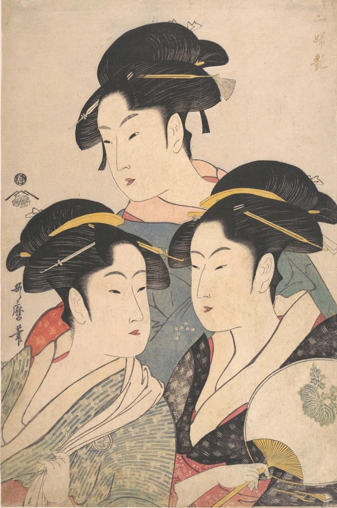

Kitagawa UtamaRen'Art
D'après Kitagawa Utamaro,

"histoire du tableau"
Dans un Japon de l'ère Kansei, où la beauté prime sur le reste, 3 femelles renardes nommées : Toyohina, Kita et Hisa, posent pour une gravure dans le bois.
À propos du tableau original
Titre: 高名三美人, Kōmei San Bijin - Trois beautés célèbres /
Artiste: Utamaro /
Date: 1792-1793 /
Type: Nishikie /
Support: gravure sur bois /
Dimensions: 37,9 * 24,9 cm /
Lieu d'expo: muséum départemental des Hautes-Alpes /